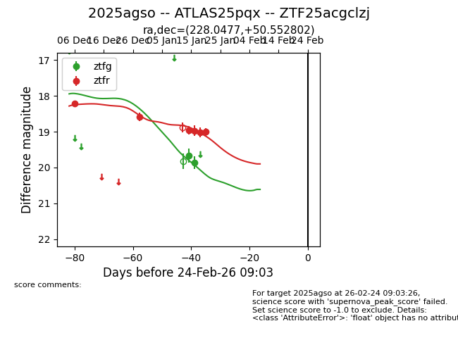
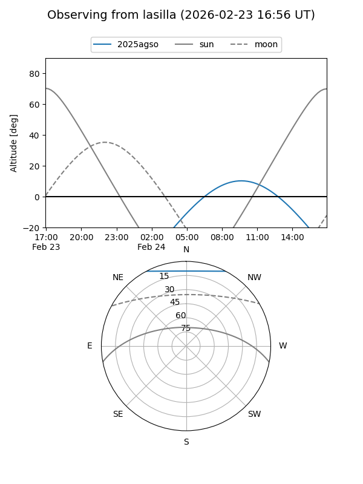
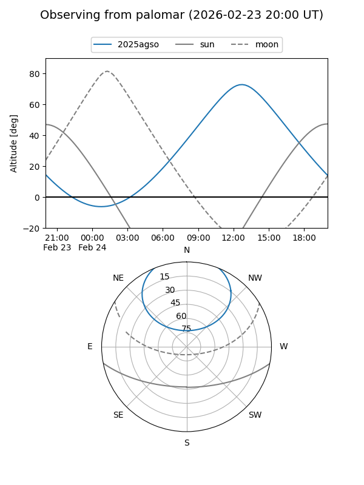
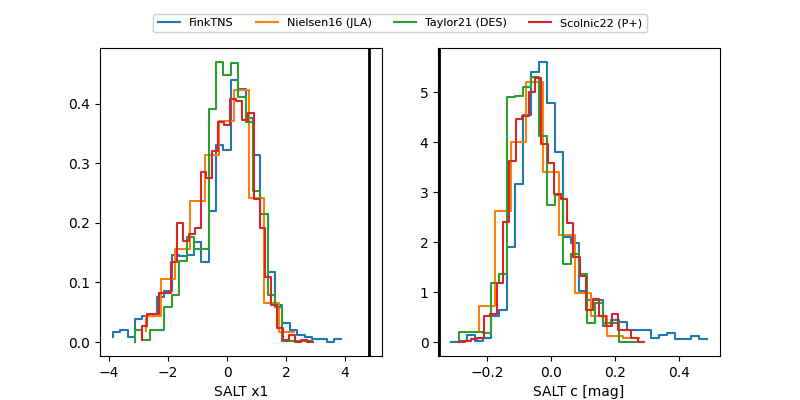

2025agso
Target 2025agso at 2026-01-14 13:35
Aliases and brokers:
FINK: link
Lasair: link
ALeRCE: link
TNS: link
YSE: link
alt names
ZTF25acgclzj (ztf,fink_ztf)
2025agso (tns,yse)
ATLAS25pqx (atlas)
Coordinates:
equatorial (ra, dec) = 228.0477,+50.55280
equatorial (HMS+DMS) = 15:12:11.44,+50:33:10.09
galactic (l, b) = (83.8288,+54.51354)
Flags:
Photometry:
last ztfg=19.67, ztfr=18.58
1 ztfg, 2 ztfr detections
Lightcurve

Visibility


Additional plots
